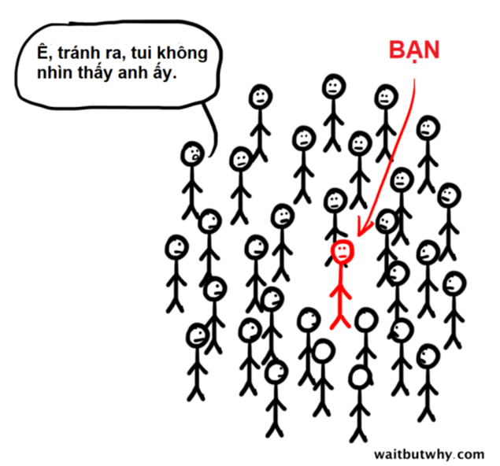
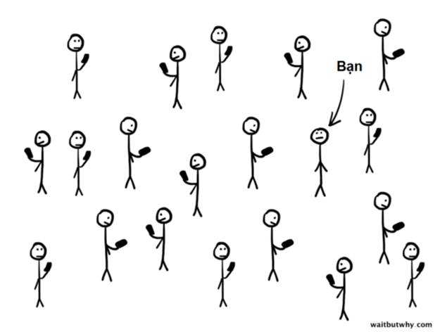

YAA - Chương 2 (5)
4
Hiệu ứng ánh đèn sân khấu
Quay trở lại năm 2000, có một thuật ngữ kỳ lạ đã xâm nhập vào thế giới tâm lý học thông qua tạp chí Current Directions in Psychological Science. Nhà tâm lý học Thomas Gilovich và Kenneth Savitsky đã đặt ra thuật ngữ “hiệu ứng ánh đèn sân khấu[1].”
Hiệu ứng ánh đèn sân khấu là gì?
Đó là cảm giác rằng bạn đang được chú ý, quan sát, theo dõi, và, quan trọng là, được đánh giá nhiều hơn so với thực tế. Bởi vì chúng ta là trung tâm thế giới của chính mình, chúng ta tin rằng mình cũng là trung tâm thế giới của những người khác.
Gilovich, thuộc trường Đại học Cornell, đã hợp tác với Justin Kruger thuộc trường Đại học Illinois tại Urbana-Champaign và Victoria Medvec thuộc trường Đại học Northwestern để tìm hiểu sâu hơn về hiệu ứng ánh đèn sân khấu. Họ chọn ra một nhóm sinh viên trường Cornell và yêu cầu các sinh viên này đánh giá khả năng của mình trong mắt người khác ở ba lĩnh vực: ngoại hình, thành tích thể thao, và khả năng chơi một trò chơi điện tử.
Bạn có đoán được không? Những người tham gia liên tục đánh giá quá cao ghi nhận của các quan sát viên về điểm mạnh và điểm yếu của bản thân. Đây có phải là một vấn đề lớn không? Có! Các nhà nghiên cứu nói rằng nỗi sợ bị phán xét có thể gây ra hội chứng sợ xã hội[2] và bị nỗi hối hận gặm nhấm.
Nếu chúng ta nghĩ rằng ánh đèn sân khấu luôn hướng vào mình, nhưng thực ra không phải thế, vậy thì đâu là giải pháp?
Rất đơn giản.
Hãy dịch chuyển ánh đèn sân khấu.
Hãy nhớ rằng bạn đang tin là ánh đèn sân khấu chiếu vào bạn, và tất cả đám khán giả ở trong bóng tối kia đang nhìn chằm chằm và theo dõi và chờ đợi bạn.
Nhưng họ không hề làm vậy.
Vậy thì làm thế nào để tâm trí của bạn có thể dịch chuyển ánh đèn sân khấu khỏi việc tập trung vào bản thân?
Tim Urban đã lập môt trang blog vô cùng nổi tiếng Wait But Why[3], và một trong những bài viết được chia sẻ nhiều nhất của anh là “Thuần hóa con voi ma mút: Tại sao bạn nên ngừng quan tâm tới việc người khác nghĩ gì[4].” Bản thân bài viết rất đáng để đọc, nhưng anh ấy cũng đưa vào hai hình hoạt họa ở gần cuối bài khiến tôi phải bật cười vì nhận ra những gì chúng ta đang nói đến ở đây.
Hình vẽ đầu tiên cho thấy chúng ta nghĩ về mọi việc như thế nào.
Nó minh họa bạn như một cái que được vây quanh bởi một đám đông những kẻ đang nhìn chằm chằm vào bạn. Đó là cách mà chúng ta nghĩ về sự việc! Đó chính là hiệu ứng ánh đèn sân khấu. Phần chú thích ghi, “Mọi người đang nói về tôi và cuộc sống của tôi và cứ nghĩ đến việc người ta sẽ nói nhiều về nó như thế nào nếu như tôi thực hiện cái việc đầy rủi ro hay kỳ cục này mà xem.”

Hình thứ hai cho thấy sự việc thật sự diễn ra như thế nào.
Và chúng thực sự diễn ra như thế nào?
Như vầy:

Chú thích bên dưới hình vẽ thứ hai nói rằng, “Không có ai thực sự quan tâm tới việc bạn đang làm đến vậy đâu. Thằng nào cũng chỉ chăm chăm nghĩ đến mình mà thôi.”
Chúng ta tin rằng ánh đèn sân khấu đang rọi vào chúng ta.
Nhưng không phải vậy.
Khi chúng ta vấp ngã, ta cho rằng mọi ánh mắt đều đổ dồn vào mình. Ta nghĩ rằng tất cả đều là về ta! Đạt thành tích kém trong một công việc có nghĩa là bị bẽ mặt công khai và sẽ phải ngủ với một khay bánh mỳ kẹp thịt hoặc trở thành kẻ vô gia cư. Một cuộc chia tay tồi tệ có nghĩa là cả đời sẽ không còn yêu đương gì nữa. Một đơn xin vào đại học bị từ chối có nghĩa là bạn rõ ràng là một kẻ đầu óc bã đậu và cuộc đời bạn sắp bị mắc kẹt trong thế giới mệt mỏi và đau đớn của kẻ chỉ được nhận mức lương tối thiểu.
Chúng ta nắm lấy những sợi dây mỏng manh của các rắc rối và dệt chúng thành những vấn đề lớn lao và đặt toàn bộ danh tính của mình vào đó.
Và khi càng trẻ, chúng ta lại càng làm điều này nhiều hơn bởi vì ta có ít kinh nghiệm hơn để có thể giúp mình hiểu rằng mọi việc rốt cuộc rồi sẽ ổn. Một khi bạn vượt qua được một cuộc chia tay đầy khó khăn, bạn sẽ dễ dàng vượt qua lần chia tay tiếp theo hơn một chút. Khi bạn đã vượt qua lần chia tay thứ ba, bạn sẽ tiến bộ hơn rất nhiều. Một khi bạn kém cỏi trong một công việc, bạn sẽ mạnh mẽ hơn một chút ở công việc tiếp theo.
Nhưng thất bại đầu tiên đó thật sự kinh khủng.
[1] Hiệu ứng ánh đèn sân khấu (spotlight effect) là hiện tượng mà mọi người có xu hướng tin rằng họ đang được chú ý nhiều hơn so với thực tế. Đọc thêm: https://tamlyhochiendai.com/hieu-ung-anh-den-san-khau-spotlight-effect-anh-huong-nhu-the-nao-den-cuoc-song
[2] Hội chứng sợ xã hội, hay ám ảnh sợ xã hội, (tiếng Anh: social phobia, social anxiety disorder) là một dạng trong nhóm bệnh rối loạn lo âu được mô tả bởi đặc điểm sợ hãi quá mức trong các tình huống xã hội thông thường. Wikipedia
[4] https://waitbutwhy.com/2014/06/taming-mammoth-let-peoples-opinions-run-life.html
Comments